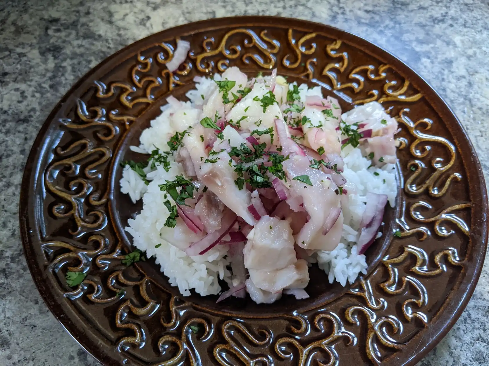

Ceviche

Description
Ceviche is a South American dish which originated in Peru. The following recipe will only cover the bare minimum ingredients, so feel free to experiment by adding things like garlic, ginger, peppers tomatoes, cilantro, other citrus juices, and anything else you feel might taste good in there.
Ingredients
- Seafood
- Red Onion
- Lime Juice
Directions
- Slice your onion as thinly as you can then let them all sit in a bowl of cold water for a while. Soaking your onion slices like this will make it so that their flavor is not as strong so that it won’t overpower everything.
- While your onion is soaking cut your chosen seafood into cubes. Ceviche can be made with any type of seafood but fish with white meat native to South America, or things like shrimp and octopus are best. Season your cubed seafood generously with salt and pepper and place in a bowl.
- Squeeze the juice of several limes onto your seafood, remember when shopping for limes the softer ones will have the most juice. You want to get good coverage over all your meat but it is important to remember that there is such a thing as too much lime.
- Add the onion slices then cover and let sit in the fridge. You can get away with eating it after only an hour but ceviche gets better as it ages so it may be best to have more patience and let it sit overnight.
Home